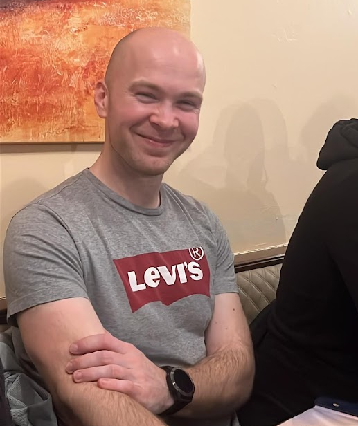

Matej Pajnič

Summary
I am persistant and hardworking person with plenty experience in sales.
I think outside the box and i enjoy challanges which push me further.
Education
- Logistics Enginner, B&B [2013-2015]
- Gymnasium Graduate, Gymnasium and Sesonday School in Kočevje [2005–2009]
- Elementary School, Elementary School of dr. France Prešern in Ribnica [1997–2004 ]
Work Experience
Skills
- Customer service ★★★★★
- Problem solving ★★★★★
- Microsoft Office ★★★
- German language ★★★★
- English language ★★★★
Other